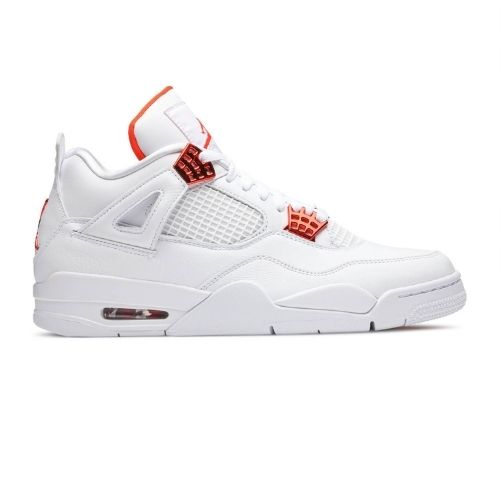

JORDAN-4 "REDMETALLIC"

Descripció del producte:
Les Jordan 4 Red Metallic són una versió limitada de les Jordan 4, amb un disseny en tons vermells i platejats. Aquestes sabatilles tenen un aspecte brillant i cridaner, amb una part superior de cuir i detalls de malla. També inclouen detalls en tons negre i una sola de goma blanca.
Preu:
679€
- Opcions de servei: Compres dins de la botiga - Recollida al carrer.
- Email: info@sneakersplace.com
- Telèfon: 689-665-942
- Adreça: Carrer de la Canuda, 23, 08002 Barcelona
- Província: Barcelona